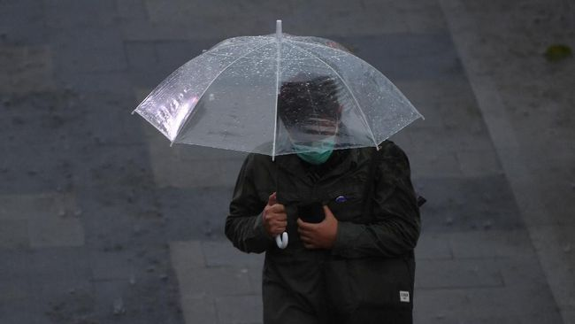

7 Tips Liburan Tetap Asyik dan Menyenangkan di tengah Musim Hujan
Purwakarta, AboutNews-- Momen liburan Natal dan Tahun Baru (Nataru) menjadi waktu yang ditunggu-tunggu untuk menjalani liburan bersama orang-orang terkasih. Namun, curah hujan yang sedang tinggi ketika akhir tahun tak jarang bisa mengganggu aktivitasmu. Kamu tentu ingin tetap menjalani liburan dengan suasana yang menyenangkan meski musim hujan tengah berlangsung. Maka dari itu, kamu memerlukan berbagai persiapan untuk bisa menghadapi cuaca ekstrem demi memastikan kegiatan liburan kamu bukan hanya seru, tapi juga aman.
Kamu juga sebaiknya tidak memaksakan diri ke luar ruangan apabila hujan lebat sedang terjadi. Sebab, banyak aktivitas seru lainnya yang bisa dilakukan di dalam ruangan selama liburan. Berikut tips bagi kamu menjalani liburan tetap menyenangkan meski sedang musim hujan, yang dirangkum dari berbagai sumber.
1. Bawa Jas Hujan dan Payung
Barang-barang yang identik untuk bertempur di tengah musim hujan adalah payung dan jas hujan. Membawa kedua hal tersebut menjadi penting ketika kondisi cuaca yang tidak bisa diprediksi seperti sekarang ini.
Jas hujan dan payung berfungsi sebagai pelindung, agar jika tiba-tiba turun hujan, kamu tidak basah kuyup dan tidak perlu repot mencari tempat berteduh. Mobilisasi selama liburan pun jadi tetap bisa dilakukan di tengah kondisi hujan.
2. Membawa Obat-obatan
Ketika musim hujan, tubuh kita jadi lebih rentan terserang penyakit seperti flu atau demam. Supaya kamu tetap sehat dan bugar, kamu perlu membawa obat-obatan. Adapun obat-obatan yang biasanya dibawa saat liburan ialah vitamin c, obat demam, obat flu batuk, serta minyak angin dan pereda nyeri tenggorokan.
3. Jaga Kesehatan Sebelum Liburan
Jika kamu sudah menyiapkan rencana liburan ketika musim hujan masih berlangsung, yang perlu kamu lakukan adalah menjaga kesehatan sebelum memulai perjalanan. Selain itu, penting untuk menghindari kelelahan sebelum berangkat. Dibutuhkan fisik yang kuat dan bugar ketika menjalani liburan, karena selama berlibur terdapat banyak aktivitas yang kamu lakukan, misalnya seperti berjalan-jalan.
4. Membawa Baju Hangat
Musim hujan membawa suhu yang tentunya jauh lebih dingin dibandingkan hari biasanya. Baju hangat tentu akan sangat berguna menjagamu dari udara yang lebih dingin. Bawalah baju-baju berbahan tebal atau jaket untuk menjaga suhu badanmu tetap hangat dan nyaman.
5. Pilih Objek Wisata Alternatif
Mengubah rencana liburan karena kejadian yang tak terduga pasti akan sangat menyedihkan. Namun, kamu tetap mengutamakan keselamatan di atas segalanya. Pilihlah destinasi wisata di dalam ruangan ketika cuaca yang sedang tidak bersahabat seperti sekarang, supaya perjalananmu tidak mengecewakan ketika hujan sedang turun. Terdapat banyak pilihan destinasi dalam ruangan saat ini yang bisa kamu pilih.
6. Pilih Makanan dan Minuman yang Menghangatkan Badan
Kamu bisa memilih makanan dan minuman yang menjaga suhu badanmu tetap hangat agar kamu tidak terserang hawa dingin yang menusuk. Perutmu juga jangan dibiarkan kosong ketika beraktivitas saat liburan. Kamu juga bisa membawa mi instan yang diseduh dengan air panas serta minuman seperti teh atau minuman jahe untuk berjaga-jaga.
7. Lakukan Staycation
Staycation merupakan pilihan liburan alternatif selama musim hujan, karena kamu tidak perlu pergi ke mana pun. Carilah hotel atau penginapan lainnya yang memiliki fasilitas lengkap seperti kolam renang atau playground sehingga liburanmu tetap seru. Kamu juga bisa mencari rekomendasi aktivitas yang bisa dilakukan ketika melakukan staycation agar liburanmu tidak membosankan meski tidak ke luar penginapan.